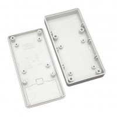

Project template containing the recommended board layout for Hammond Manufacturing 1599B-BAT:
Black: 1599RFIBBKBAT - HM4103-ND
Gray: 1599BSGYBAT - HM349-ND
Gray: 1599BGYBATCP - HM4086-ND
Gray: 1599BGYBAT - HM352-ND
Black: 1599BBKBATCP - HM2080-ND
Black: 1599BBKBAT - HM351-ND
|
|
 |
The "Dwgs.User" layer contains all critical dimmensions in milimeters[inches].
The "Edge.Cuts" layer contains the maximum board outline and holes to align with board standoffs.
PCB Preview: